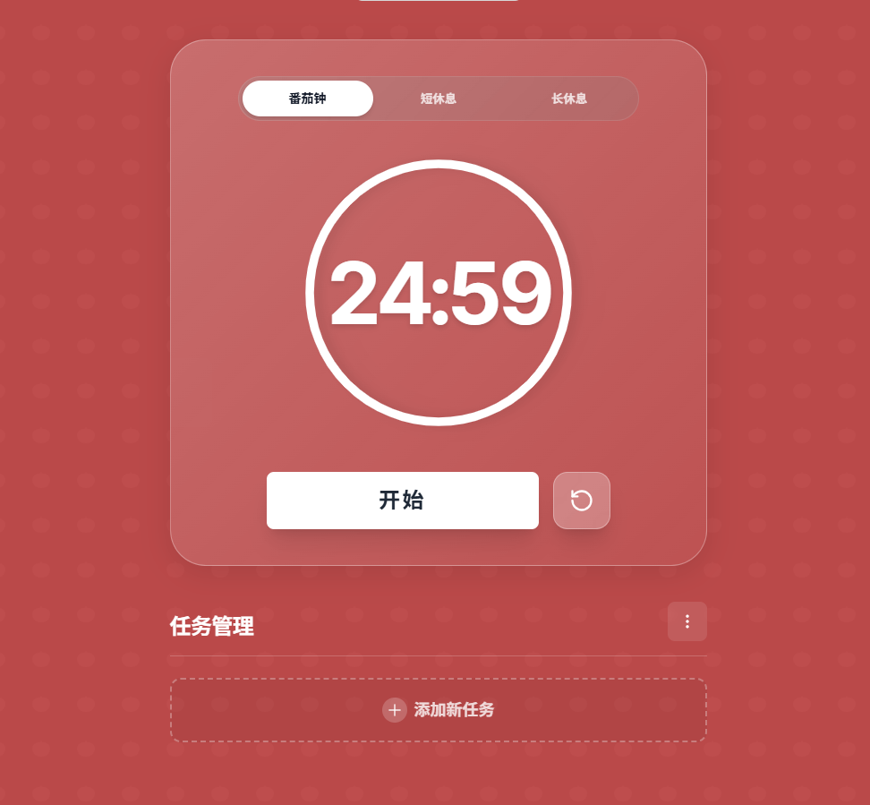
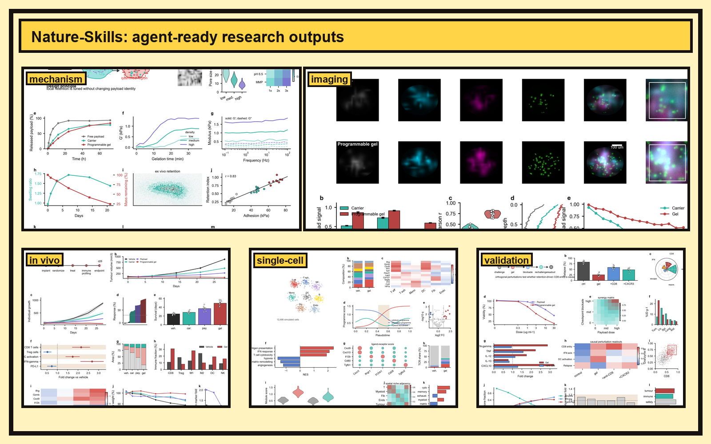
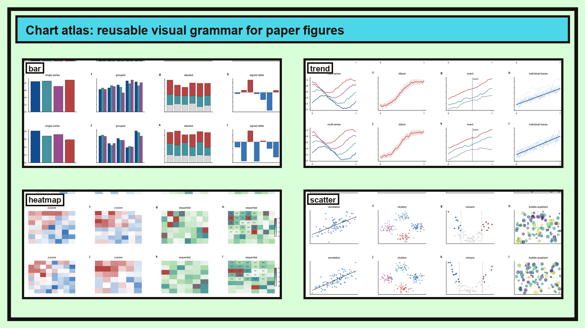

ChatGPT
复杂问题、新项目底座、代码和写作主力。
门槛 / 费用
Go 约 8 美元/月起；Plus 约 20 美元/月。国内使用仍主要卡在网络和支付路径。
今天围绕两条主线展开：Vibe Coding 和 Vibe Research。核心不是“让 AI 替我做科研”，而是用 AI 重组科研工作流。
用 AI 工具重组科研工作流。
描述目标，运行验证，给出反馈，迭代成品。
闭环关键：运行体验后判断“是否满意”。满意就交付；不满意就反馈修改，回到 AI 生成。
先让 AI 自由发挥做初版，再给参考图要求 1:1 复刻。观众能直接复制提示词，现场演示这套闭环。
请帮我做一个番茄钟网页小程序，包含番茄钟、短休息、长休息三种模式，支持开始、暂停、重置和任务管理。请用单个 HTML 文件实现，界面要简洁好看，可以直接在浏览器打开。
这是我喜欢的番茄钟参考图。请参考它的整体风格重新设计一版，尽量做到 1:1：红色背景、半透明圆角面板、顶部三段切换、大号圆形倒计时、开始按钮、重置按钮和任务管理区域都要保留。

同一套科研协作思路，分成两种入口：聊天框快速启动，智能体流程化执行。
git clone ... && scripts/update-codex-skills.sh --pull


skills/ 下每个 nature-* 都是可安装单元，依赖 SKILL.md、manifest.yaml、references/、脚本和资产，让智能体按流程完成科研任务。
不是所有 AI 工具都叫 IDE。按入口来分，才能知道该把什么任务交给谁。
ChatGPT、Kimi、豆包、Gemini。适合问答、读论文、翻译、总结和头脑风暴。
Codex App、Trae Solo/Work、小龙虾等。适合把完整任务交给 Agent：读项目、拆步骤、执行、生成报告、持续汇报。它不是传统 IDE，而是任务型 Agent 平台。
Trae、VSCode、Cursor。适合 Python、C、LaTeX、Markdown、SSH 和工程调试。我现在主力转向 Trae：AI 原生、中文友好、国产模型多、VSCode 配置迁移成本低。
Codex CLI、Claude Code。适合服务器、批处理、远程环境和无图形界面场景。推荐 Codex CLI；Claude Code 代码强但封号和验证风险高。
不要迷信单一模型，把强推理、长上下文、多模态和便宜 API 分开选。
复杂问题、新项目底座、代码和写作主力。
Go 约 8 美元/月起；Plus 约 20 美元/月。国内使用仍主要卡在网络和支付路径。

多模态和 NotebookLM 搭配好用，适合资料阅读。
Google AI Plus 约 4.99 美元/月起；AI Pro 约 19.99 美元/月，地区价格会变。

代码能力强，但账号、验证和使用门槛偏高。
Claude Pro 约 20 美元/月；账号、地区、支付和验证门槛偏高，所以不作为主用。

长上下文、文献调研和复杂中文问题很顺手。
免费档可用；付费会员 Andante 约 49 元/月起，高频 Agent / Code 再看更高档。

手机端常用，多模态和日常小问题处理方便。
基础版免费；专业版标准套餐约 68 元/月起，主要面向复杂办公和生产力任务。

推理和代码辅助常用，适合作为便宜 API 备用。
聊天端免费；官方 API 按量计费，V4 Flash 约 0.14 美元/百万输入、0.28 美元/百万输出 tokens。
阿里系模型，中文、代码和开源生态覆盖面广。
千问 App 可免费用；阿里云百炼按量或资源包计费，Qwen-Plus 资源包可见约 11.66 元/3 月起。

百度系入口，搜索、办公和中文内容场景覆盖多。
现已全面免费；历史专业版曾为连续包月约 49.9 元/月、单月 59.9 元。
微信生态友好，适合日常问答和资料整理。
目前以免费使用为主；未查到稳定公开 C 端月订阅价，实际以 App 内购买页为准。
GLM 系模型，适合观察国产模型能力边界。
App Store 显示连续包月约 19 元/月起；另有月卡、积分包和 SVIP 档。
语音、教育和办公场景积累多，适合中文材料处理。
App Store 显示求职 AI 助手连续包月约 15 元/月；通用会员和 API 另看官方页面。
ChatGPT
Kimi
豆包
DeepSeek
Gemini
价格、额度和入口变化很快；以上按 2026-07-03 公开官网、App Store 或购买页可见的最低档整理。

请基于 sample_pdfs 中的专利 PDF 和现有脚本，完成一次可复现的专利整理演示。 要求：说明字段、运行样本、输出 CSV/TXT、标出人工核验字段，不编造 PDF 中不存在的信息。

帮我生成一个模拟数据存到 csv 文件中，我需要对其进行科研绘图。
请帮我用 nature-figure 来完成上述数据的科研绘图。
帮我生成一段对这个结果的中文描述。 接下来利用 nature-polishing 对上述的结果描述进行学术英语写作。

请用 Python 复现这篇论文中的算例 1，直到误差指标和原文保持一致。 要求：读取论文 PDF，定位算例设置；实现 GBDF2-IMEX 数值格式；输出时间和空间误差图；制作中文 HTML 对比报告，包含原文截图、复现图和关键误差表。
开启宝箱，拾取科研工作流里的常用网站、插件和桌面软件。
开启科研工具箱
压缩与优化图片体积，适合网页、PPT、报告配图收尾。
官网 Doc2X 网站PDF 转 Word、Markdown、LaTeX，把论文材料拆出来再交给 AI 校对。
官网 YouMind
网站
YouMind
网站GPT Image 2 提示词参考站，适合找科研示意图和视觉风格灵感。
官网 无水印解析
网站
无水印解析
网站处理短视频素材链接，适合保存公开演示素材和课堂参考片段。
官网 硅基流动 网站国产与开源模型 API 入口，适合低成本测试模型、脚本和 Agent 调用。
官网 Easy Scholar 浏览器插件检索论文时快速看期刊等级、分区和常用评价信息。
官网 iTab
浏览器插件
iTab
浏览器插件把常用 AI、文献、邮箱、网盘入口整理成一个干净的新标签页。
官网 AdGuard
浏览器插件
AdGuard
浏览器插件过滤广告和干扰元素，读资料、查文献时页面更清爽。
官网 沉浸式翻译 浏览器插件双语网页、PDF 和视频字幕翻译，适合追踪海外论文、文档和模型更新。
官网 Zotero Connector
浏览器插件
Zotero Connector
浏览器插件从网页、Google Scholar 和出版社页面一键保存文献元数据。
官网 Typora
软件
Typora
软件Markdown 写作、笔记和报告初稿，适合轻量整理科研材料。
官网Zotero
软件文献库、引用、PDF 管理和 BibTeX，是论文写作的底座工具。
官网 豆包桌面端
软件
豆包桌面端
软件多模态问答、截图解释、日常材料处理，适合随手问和看图。
官网 Codex
软件
Codex
软件Agent 任务执行、读项目、改代码、跑验证，也可和 Trae Work 形成组合。
官网 Trae
软件
Trae
软件AI 原生 IDE，适合代码、网页和科研脚本迭代。
官网目的不是炫技，而是说明 AI Agent 能把想法推进成可用项目。
交互展示、图表嵌入、长期保存。
项目、论文、简历、联系方式。
课程信息、资料目录、答疑入口。
重复流程自动化，迁移到科研批处理。
现场分享也可以做成可复用项目。